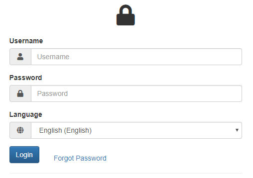
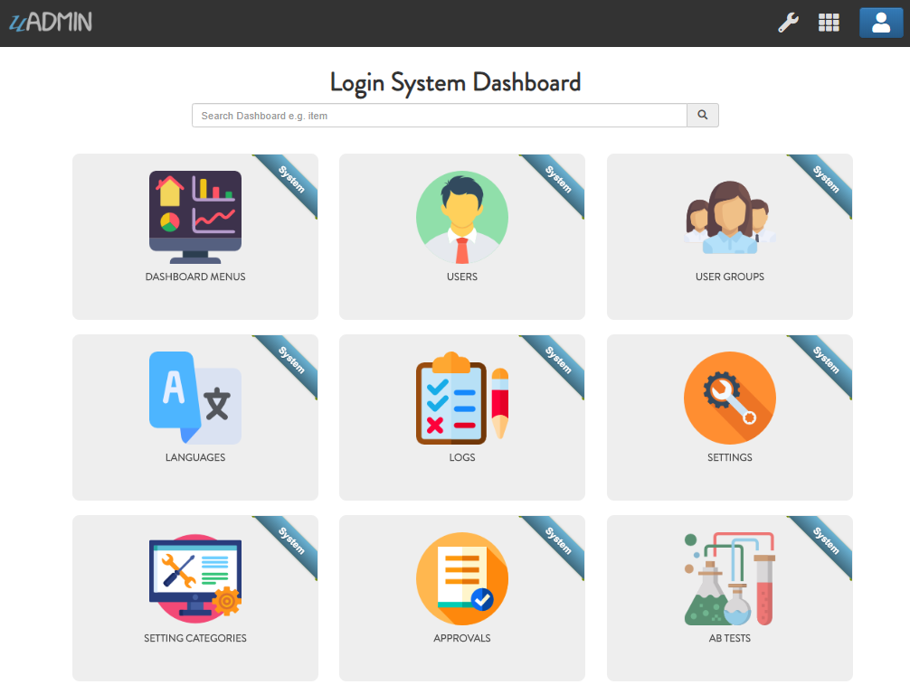

Login System Tutorial Part 1 - Build A Project¶
In this part, we will cover on building and preparing a project from scratch.
First of all, let’s create a folder for your project and prepare it.
$ mkdir -p ~/go/src/github.com/your_name/login_system_views
$ cd ~/go/src/github.com/your_name/login_system_views
$ uadmin prepare
[ OK ] Created: /home/pc_name/go/src/github.com/your_name/login_system_views/models
[ OK ] Created: /home/pc_name/go/src/github.com/your_name/login_system_views/api
[ OK ] Created: /home/pc_name/go/src/github.com/your_name/login_system_views/views
[ OK ] Created: /home/pc_name/go/src/github.com/your_name/login_system_views/media
[ OK ] Created: /home/pc_name/go/src/github.com/your_name/login_system_views/static
[ OK ] Created: /home/pc_name/go/src/github.com/your_name/login_system_views/templates
Use your favorite editor to create main.go inside that path. Put the following code in main.go.
package main
import (
"github.com/uadmin/uadmin"
)
func main() {
// Assign RootURL value as "/admin/" and Site Name as "Login System"
// NOTE: This code works only on first build.
uadmin.RootURL = "/admin/"
uadmin.SiteName = "Login System"
// Run the server
uadmin.StartServer()
}
Important
In Windows, you need to use localhost in order to run your application (e.g. http://localhost:8080). Another way is to set your loopback Internet protocol (IP) address by using uadmin.BindIP to establish an IP connection to the same machine or computer being used by the end-user.
Sample:
func main(){
// Assign BindIP value to "127.0.0.1" in the Settings
// NOTE: This code works only on first build.
uadmin.BindIP = "127.0.0.1"
}
Now to run your code (Linux and Apple macOS):
go build; ./login_system_views
In Windows:
go build & login_system_views
Result:
[ OK ] Initializing DB: [13/13]
[ OK ] Initializing Languages: [185/185]
[ INFO ] Auto generated admin user. Username: admin, Password: admin.
[ OK ] Synching System Settings: [51/51]
[ OK ] Server Started: http://0.0.0.0:8080
___ __ _
__ __/ | ____/ /___ ___ (_)___
/ / / / /| |/ __ / __ __ \/ / __ \
/ /_/ / ___ / /_/ / / / / / / / / / /
\__,_/_/ |_\__,_/_/ /_/ /_/_/_/ /_/
Open your browser and type the IP address above including the path that you have assigned in RootURL (e.g. http://localhost:8080/admin/). Then login using “admin” as username and password.
You will be greeted by the Login System dashboard that contains the system models built in uAdmin.
Click here to view our progress so far.
In the next part, we will discuss about creating a login form in HTML.